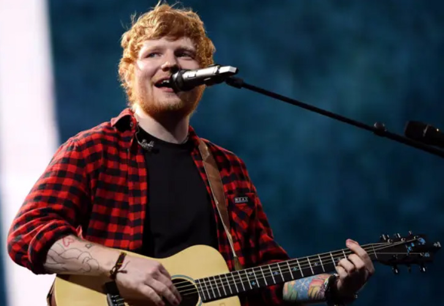
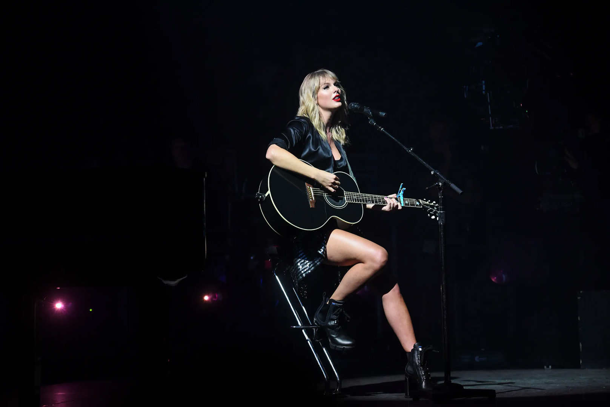

Übersicht der Eigenschaften einer Westerngitarre und Unterschiede zur Konzertgitarre:
- Saiten aus Stahl
- Pins am Steg zum Befestigen der Saiten
- Schlagbrett unterhalb des Schallloches
- Oftmals mit Cutaway (Einbuchtung am Korpus), um die hohen Bünde besser zu erreichen
- Manchmal Tonabnehmer eingebaut, zum Anschließen an einen Verstärker
- Besser zum Strummen (Schlagen der Saiten) geeignet
- Lauter, gerade beim Strummen
- Brillanter und hellerer Klang
Westerngitarren werden, wie der Name schon sagt, bei Country-, Folk-, Rock-, und Westernsongs benutzt,
seit vielen Jahren aber auch in der Popmusik. Der britische Sänger und Songwriter Ed Sheeran hat
meiner Meinung nach die Westerngitarre im Popbereich bedeutend nach vorne gebracht, auch weil er
bei seinen Aufnahmen und bei seinen Auftritten eine verwendet.
Ebenfalls hat die Popsängerin Taylor Swift
die Westerngitarre pop-tauglich gemacht. Ursprünglich kam die erfolgreiche Sängerin und Songwriterin aus
der Countrymusik, daher ihre Verbundenheit zu Westerngitarren.
Hier Ed Sheeran und Taylor Swift:


Hier sind beide Künstler bei
ihrem Duett von Everything Has Changed zu sehen
Zurück zur Startseite